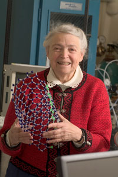

|  |
Mildred DresselhausInstitute Professor of Electrical Engineering and Physics Massachusetts Institute of Technology
Public Lecture5:00 p.m., Thursday, April 26, 2012 |
3:35 p.m., Wednesday, April 25, 2011Mildred Dresselhaus Bio Mildred Dresselhaus is an Institute Professor of Electrical Engineering and Physics at MIT. She is the recipient of the National Medal of Science and 28 honorary degrees worldwide. She has served as President of the American Association for the Advancement of Science, Treasurer of the National Academy of Sciences, President of the American Physical Society, and Chair of the Governing Board of the American Institute of Physics. She is also a member of the National Academy of Engineering, the American Philosophical Society, and a Fellow of the American Academy of Arts and Sciences. She served as the Director of the Office of Science at the U.S. Department of Energy. Professor Dresselhaus' research over the years has covered a wide range of topics in Condensed Matter and Materials Physics. She is best known for her work on carbon science and carbon nanostructures, as well as nanoscience and nanotechnology more generally. She is also one of the researchers responsible for the resurgence of the Thermoelectrics research field through her early work on low dimensional thermoelectricity in the early 1990's.
Tate Laboratory of Physics, Room 131 Physics
"My 50-year Adventure with Carbon"
Click here for abstract
Refreshments served in Room 216 Physics after colloquium